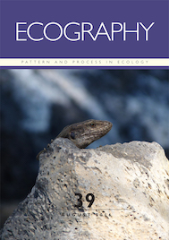

Accessing these papers. Knowledge should be accessible. Currently, pay-to-publish Open Access options at many journals makes accessing the outcome
of science accessible to those with a sufficient internet connection and who can, for many 'international' journals, read English. However, this pay-to-publish model
makes doing, and communicating, science less open. Instead it concentrates the publication of new knowledge within a small group of well-funded researchers
who can afford to pay thousands of dollars/pounds/euros/etc to publish a single paper. And while many journals have fee waivers, the potential for high fees remains a huge deterrent/barrier.
I don't know the solution, but I do know that the gatekeepers of publication should be scientific editors and peer-reviewers, not a bank balance.
Thus all of these papers are free to access in some way. For some we've been lucky/privileged
enough to be able to pay open access fees. For paywalled papers, please email me at aalgar@lakeheadu.ca and I will send you a PDF. For free - the original open access!


Herrera-Alsina, L., Algar A.C., Bocedi G., Gubry-Rangin, C., Lancaster, L., Mynard, P., Osborne, O.G., Papadopulos, A.S.T., Creer, S., Nangoy, M., Fahri F., Lupiyaningdyah, P., Sudiana, I.M., Juliandi, B., Travis, J.M.J. In Press. Ancient geological dynamics impact neutral biodiversity accumulation and are detectable in phylogenetic reconstructions. Global Ecology & Biogeography.
Bennett, J.M., Sunday, J., Calosi, P., Villalobos, F., Martínez, Molina-Venegas, R., Araújo, M.B., Algar, A.C., Clusella-Trullas, S., Hawkins, B.A., Keith, S., Kühn, I., Rahbek, C., Rodríguez, L, Singer, A., Morales-Castilla, I., Olalla-Tárraga, M.A. 2021. The evolution of critical thermal limits of life on Earth. Nature Communications 12, 1198.
Rodríguez Valido, C.A., Johnson, M.F., Dugdale, S.J., Cutts, V., Fell, H.G., Higgins, E.A., Tarr, S., Templey, C.M., Algar, A.C. 2020. Thermal sensitivity of feeding and burrowing activity of an invasive crayfish in UK waters. Ecohydrology 14, e2258.
Munro, A., Smallman-Raynor, M., Algar, A.C. 2020. Long-term changes in endemic threshold populations for pertussis in England and Wales: a spatiotemporal analysis of Lancashire and South Wales, 1940-69. Social Science & Medicine. DOI: 10.1016/j.socscimed.2020.113295
Donihue, C.M., Kowaleski, A.M., Losos, J.B., Algar, A.C., Baeckens, S., Buchkowski, R.W., Fabre, A.-C., Frank, H.K., Geneva, A.J., Reynolds, R.G., Stroud, J.T., Velasco, J.A., Kolbe, J.J., Mahler, D.L., Herrel, A. 2020. Hurricane effects on Neotropical lizards span geographic and phylogenetic scales. Proceedings of the National Academy of Sciences USA, 117, 10429-10434.
Cutts, V., Katal, N., Löwer, C., Algar, A.C., Steinbauer, M.J., Irl, S.D.H., Beierkuhnlein, C., Field, R. 2019. The effect of small-scale topography on patterns of endemism within islands. Frontiers in Biogeography, 11, e43737.
Roggatz, C.C., Fletcher, N., Benoit, D.M., Algar, A.C., Doroff, A., Wright, B., Wollenberg Valero, K.C., Hardege, J.D. 2019. Saxitoxin and tetrodotoxin bioavailability increases in future oceans. Nature Climate Change, 9, 840-844.
Tarr, S., Meiri, S., Hicks, J.J., Algar, A.C. 2018. A biogeographic reversal in sexual size dimorphism along a continental temperature gradient. Ecography, 42, 706-716.
Algar, A.C., Morley, K., Boyd, D.S. 2018. Remote sensing restores predictability of ectotherm body temperature in the world’s forests. Global Ecology & Biogeography, 27, 1412-1425.
Algar, A.C. Tarr, S. 2018. Fossils, phylogenies, and the evolving climate niche. Nature Ecology & Evolution, 2, 414-415 (Invited News & Views).
Velasco, J.A., Villalobos, F., Diniz-Filho, J.A.F., Algar, A.C., Flores-Villela, O., Köhler, G., Daza, J.M., Poe, S., Martínez-Meyer, E. 2018. Climatic and evolutionary factors shaping geographical gradients of species richness in Anolis lizards. Biological Journal of the Linnean Society, 123, 615-627.
Bennett, J.M., Calosi, P., Clusella-Trullas, S., Martínez, B., Sunday, J., Algar, A.C., Araújo, M.B., Hawkins, B.A., Keith, S., Kühn, I., Rahbek, C., Rodríguez, L., Singer, A., Villalobos, F., Olalla-Tárraga, M. Á., Morales-Castilla, I. 2018. GlobTherm, a global database on thermal tolerances for aquatic and terrestrial organisms. Scientific Data 5, 180022.
Tallowin, O., Allison, A., Algar, A.C., Kraus, F., Meiri S. 2017. Papua New Guinea terrestrial vertebrate richness: elevation matters most for all except reptiles. Journal of Biogeography 44, 1734-1744.
Algar, A.C. & López-Darias, M. 2016. Sex-specific responses of phenotypic diversity to environmental variation. Ecography 39, 715-725.
Dawson, M.N., Algar, A.C., Heaney, L.R., Stuart, Y.E. 2016. The evolutionary biogeography of islands, lakes, and mountaintops. In Kliman, R.M. (Ed.). The Encyclopedia of Evolutionary Biology. Volume 1, pp. 203-210. Oxford: Academic Press.
Algar, A.C. & Mahler, D.L. 2016. Area, climate heterogeneity, and the response of climate niches to ecological opportunity in island radiations of Anolis lizards. Global Ecology & Biogeography 25, 781-791.
Velasco, J.A., Martínez-Meyer, E., Flores-Villela, O., García-Aguayo, A., Algar, A.C., Köhler, G., Daza, J.M. 2016. Climatic niche attributes and diversification in Anolis lizards. Journal of Biogeography 43, 134-144. Highlighted in the GBIF Science Review 2016.
Muñoz, M.M., Wegener, J.E., Algar, A.C. 2014. Untangling intra- and interspecific effects on body size clines reveals divergent processes structuring convergent patterns in Anolis lizards. The American Naturalist 184, 636-646.
Muñoz, M.M., Stimola, M.A., Algar, A.C., Conover, A. Rodriguez, A.J., Landestoy, M.A., Bakken, G.S., Losos, J.B. 2014. Evolutionary stasis and lability in thermal physiology in a group of tropical lizards. Proceedings of the Royal Society B 281, 20132433.
Graham, L.J., Bailey, J.J., Algar, A.C., Field, R. 2014. Where next for macroecology: citizen macroecology? Frontiers of Biogeography 6, 16-19.
Algar, A.C., Mahler, D.L., Glor, R.E., Losos, J.B. 2013. Niche incumbency, dispersal limitation, and climate shape geographical distributions in a species-rich island adaptive radiation. Global Ecology & Biogeography 22, 391-402.
Altamirano, A., Aplin, P., Miranda, A., Cayuela, L., Algar, A.C., Field, R. 2013. High rates of forest loss and turnover obscured by classical landscape measures. Applied Geography 40, 199-211.
Dawson, M.N., Algar, A.C. et al. 2013. An horizon scan of biogeography. Frontiers of Biogeography 5, 130-157.
Stuart, Y.E., Losos, J.B., Algar, A.C. 2012. The island–mainland species turnover relationship. Proceedings of the Royal Society B 279, 4071-4077.
Algar, A.C. 2012. Biogeography by geographers. Frontiers of Biogeography 4, 61-62.
Algar, A.C. & Losos, J.B. 2011. Evolutionary assembly of island faunas reverses the classic island-mainland richness difference in Anolis lizards. Journal of Biogeography 38, 1125-1137. Selected for virtual special issue on advances in species-area research.
Algar, A.C., Kerr, J.T., Currie, D.J. 2011. Quantifying the importance of regional and local filters for community trait structure in tropical and temperate zones. Ecology 92, 903-914.
Kerr, J.T., Kulkarni, M., & Algar, A.C. 2011. Integrating theory and predictive modeling for conservation research. In Drew, C.A., Huettmann, F., Wiersma, Y.F. (Eds.). Predictive Modeling in Landscape Ecology. Springer, New York.
Algar, A.C., Kharouba, H.M., Young, E.R., & Kerr, J.T. 2009. Predicting the future of species diversity: macroecological theory, climate change, and direct tests of alternative forecasting methods. Ecography 32, 22-33.
Szabo, N.D.* Algar, A.C.*, Kerr, J.T. 2009. Reconciling topographic and climatic effects on widespread and range-restricted species richness. Global Ecology & Biogeography 18, 735-744. *Contributed equally as first authors.
Algar, A.C., Kerr, J.T., & Currie, D.J. 2009. Evolutionary constraints on regional faunas: whom, but not how many. Ecology Letters 12, 57-65.
Kharouba, H.M., Algar, A.C., & Kerr, J.T. 2009. Historically calibrated predictions of butterfly species' range shift using global change as a pseudo-experiment. Ecology 90, 2213-2222.
Algar, A.C., Kerr, J.T., & Currie, D.J. 2007. A test of metabolic theory as the mechanism underlying broad-scale species richness gradients. Global Ecology & Biogeography 16, 170-178.
Algar, A.C., Sleep, D., & Nudds, T.D. 2005. Niches, null models, and forest birds: testing competing community assembly hypotheses in disturbed and undisturbed hardwood forest. Écoscience 12, 574-580.